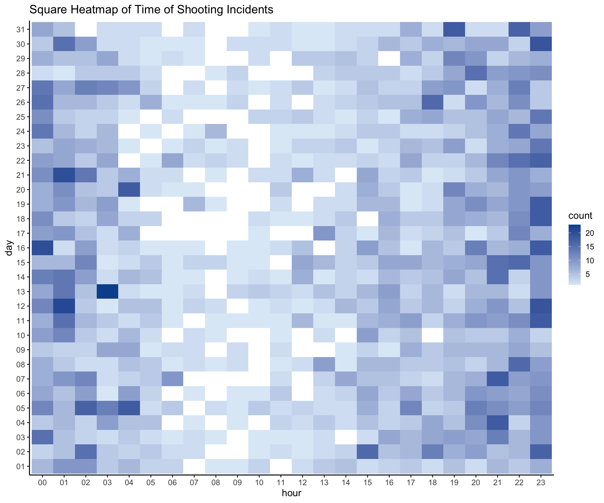

Chapter 4 Missing values
4.1 Summary
Since there are no missing values in air quality dataset and Covid-19 dataset. We will investigate how missing values appears in three crime-related datasets in this part.
4.2 About Crimes Dataset
4.2.1 Shooting
The first dataset contains every shooting incident that occurred in NYC from 2020 to this date.
This is a breakdown of every shooting incident that occurred in NYC during the Each record represents a shooting incident in NYC and includes information about the event, the location and time of occurrence. In addition, information related to suspect and victim demographics is also included.
## LOCATION_DESC PERP_RACE PERP_AGE_GROUP
## 2265 1995 1966
## PERP_SEX VIC_AGE_GROUP VIC_RACE
## 1965 10 10
## BORO OCCUR_DATE OCCUR_TIME
## 0 0 0
## PRECINCT STATISTICAL_MURDER_FLAG VIC_SEX
## 0 0 0We first count the number of missing values for all variables above and draw a missing plot for all variables and missing patterns.

From the plot we can observe variables ‘Location’, ‘Race’, ‘Age’ and ‘Sex’ have more than 50% missing rates, while other variables have almost no missing values. The most common missing pattern is where these four variables are missing. Only about 10% of all rows are complete for all variables.
The reason behind this maybe that in most cases perps are not arrested, thus all related information is missing. While other information is documented by police.
4.2.2 Arrest
The second dataset contains every arrest effected in NYC by the NYPD from 2020 to this date.
Each record represents an arrest effected in NYC by the NYPD and includes information about the type of crime, the location and time of enforcement. In addition, information related to suspect demographics is also included.
## LAW_CAT_CD PERP_RACE KY_CD OFNS_DESC PD_DESC
## 2467 1084 98 98 98
## PD_CD AGE_GROUP ARREST_BORO ARREST_DATE ARREST_PRECINCT
## 44 0 0 0 0
## LAW_CODE PERP_SEX
## 0 0We first the number of missing values for all variables above and draw a missing plot for all variables and missing patterns.
From the plot we can observe variables ‘Level of offense’, ‘Race’ have most missing values, however their missing rates are lower than 5%. The other variables have almost no missing values. The most common pattern is complete case, which indicates that there are not a lot of missing values in this dataset.
The different results between this one and last dataset is that in this case perps are arrested, thus all related information is documented by police. However this dataset contains smaller observations than last one.
4.2.3 Hate Crime
The last dataset is about confirmed hate crime incidents in New York City.
Each record represents hate crimes reported in NYC by the NYPD and includes information about the description, the location and time of enforcement. In addition, information related to suspect demographics is also included.
## Full.Complaint.ID Complaint.Year.Number
## 0 0
## Month.Number Record.Create.Date
## 0 0
## Complaint.Precinct.Code Patrol.Borough.Name
## 0 0
## County Law.Code.Category.Description
## 0 0
## Offense.Description PD.Code.Description
## 0 0
## Bias.Motive.Description Offense.Category
## 0 0
## Arrest.Date
## 0We count the number of missing values for all variables above and draw a missing plot for all variables and missing patterns.
The third dataset is much smaller and contains no missing values.